Disc Brake System: Tools and Equipment
30 31 069 Nipple, bleeding equipment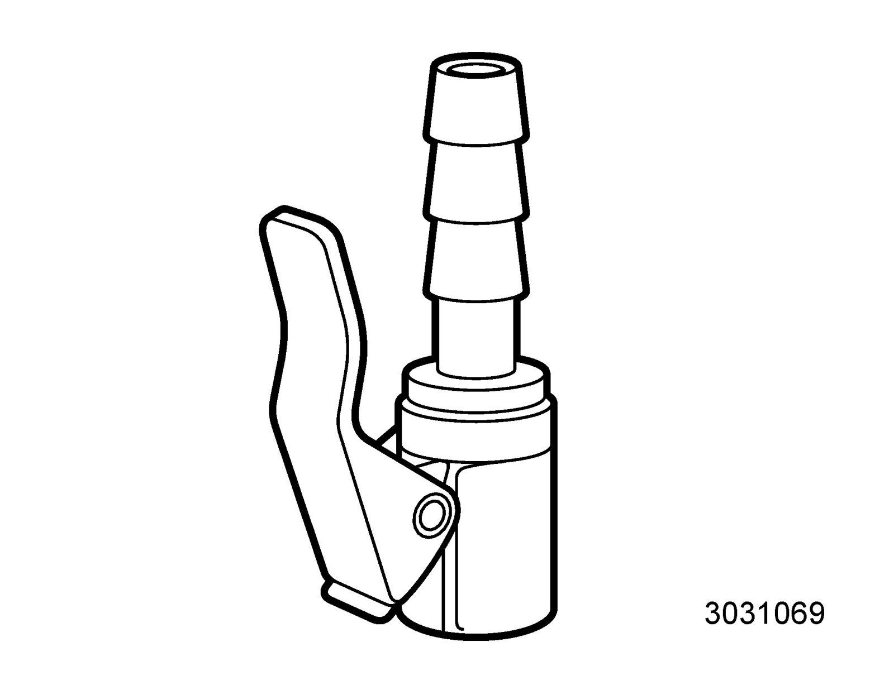
Used together with 88 19 096 Bleeding equipment
Group: Chassis
78 40 622 Dial gauge
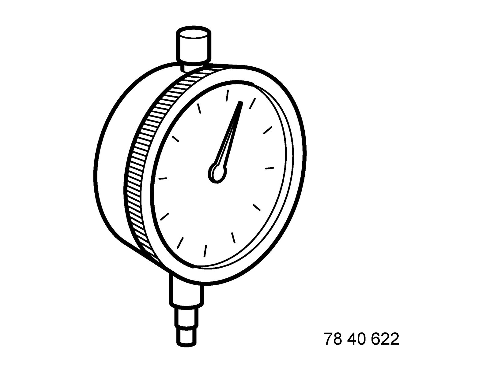
Group: Engine
83 90 288 Holder, dial gauge
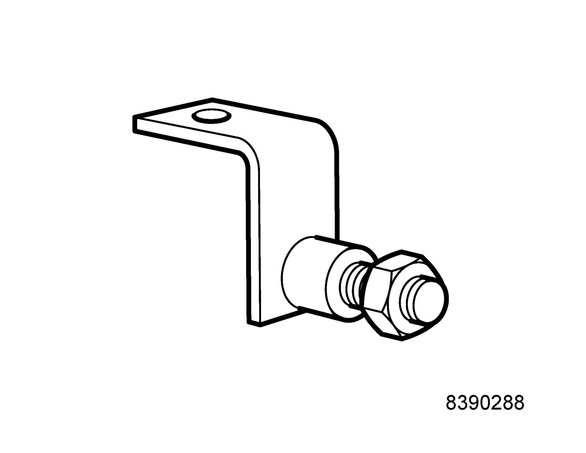
Group: Transmission
83 94 801 Parent fixture
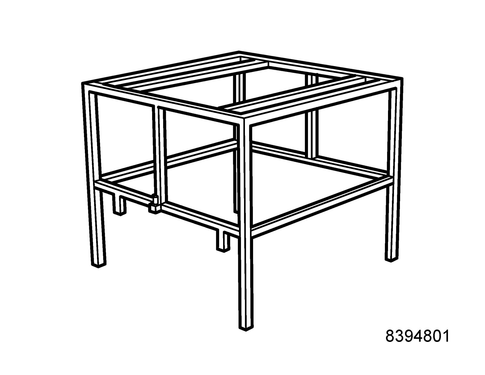
Used together with 83 95 311 Trolley lift
Group: Miscellaneous
83 95 212 Strap
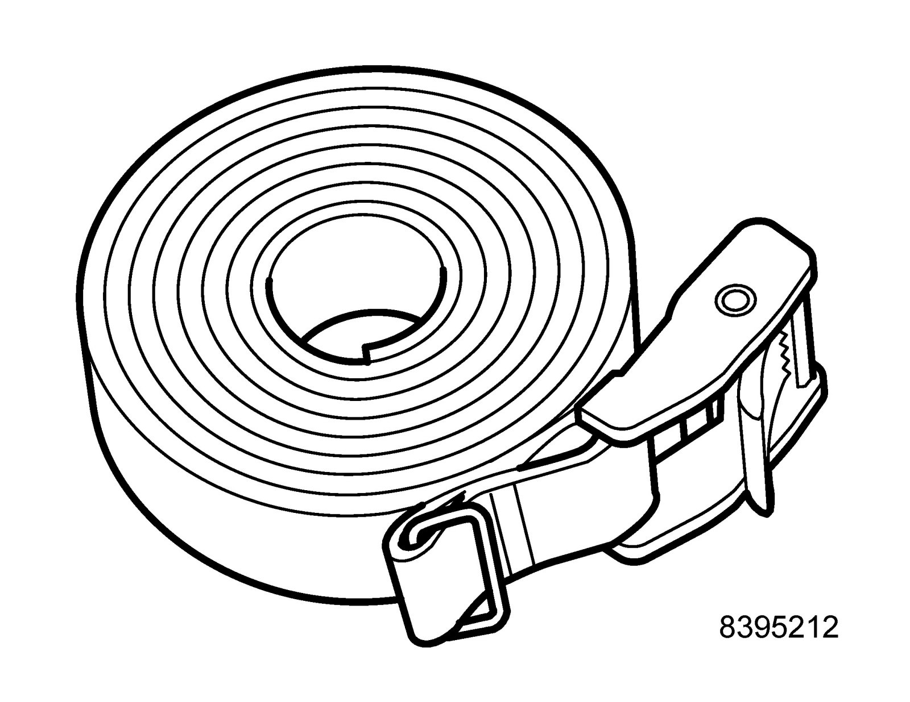
Group: Engine
83 95 311 Trolley lift
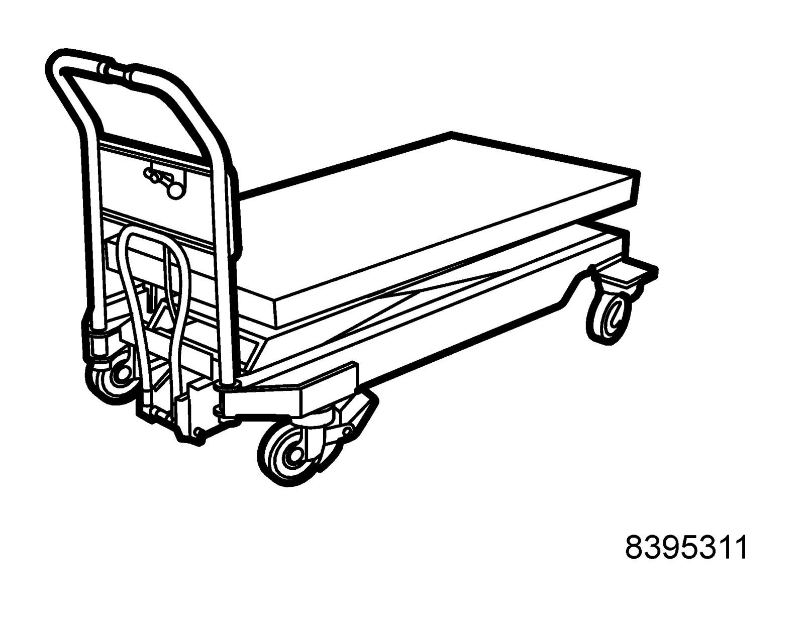
Group: Miscellaneous
83 96 137 Centering tool, subframe - body
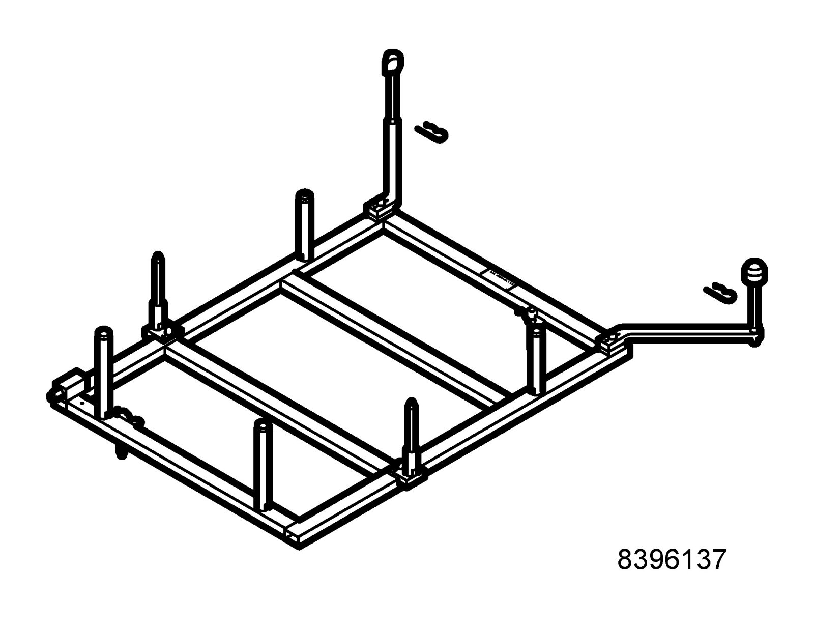
Used together with 83 96 145 Centering tool, subframe - engine and 83 95 311 Trolley lift.
Group: Chassis
88 19 096 Bleeding equipment
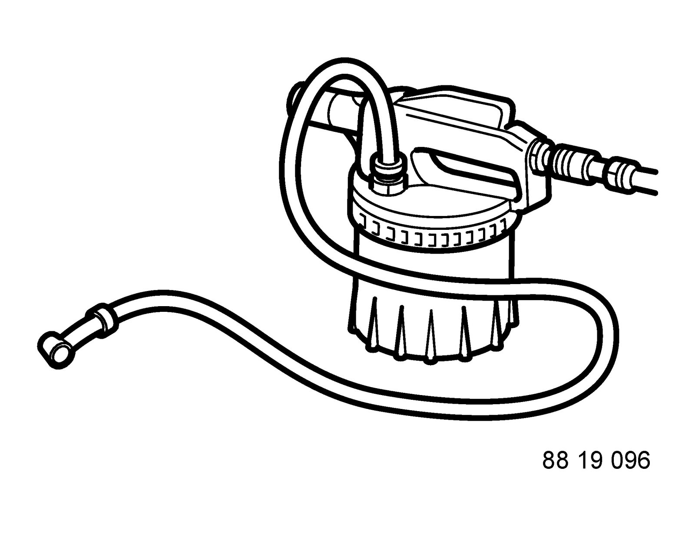
Bleeding brake and clutch systems
Group: Chassis
89 96 639 Gauge, brake disc
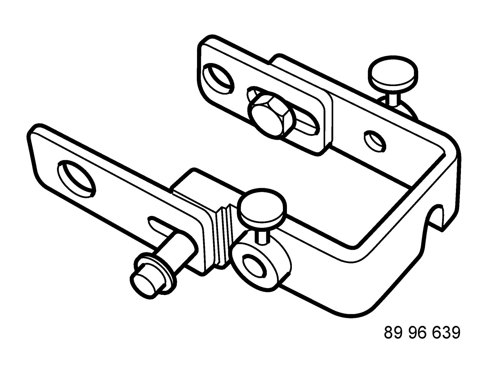
86 12 814 Toolboard T2 Chassis-body
Group: Chassis
89 96 969 Resetting tool, Handbrake
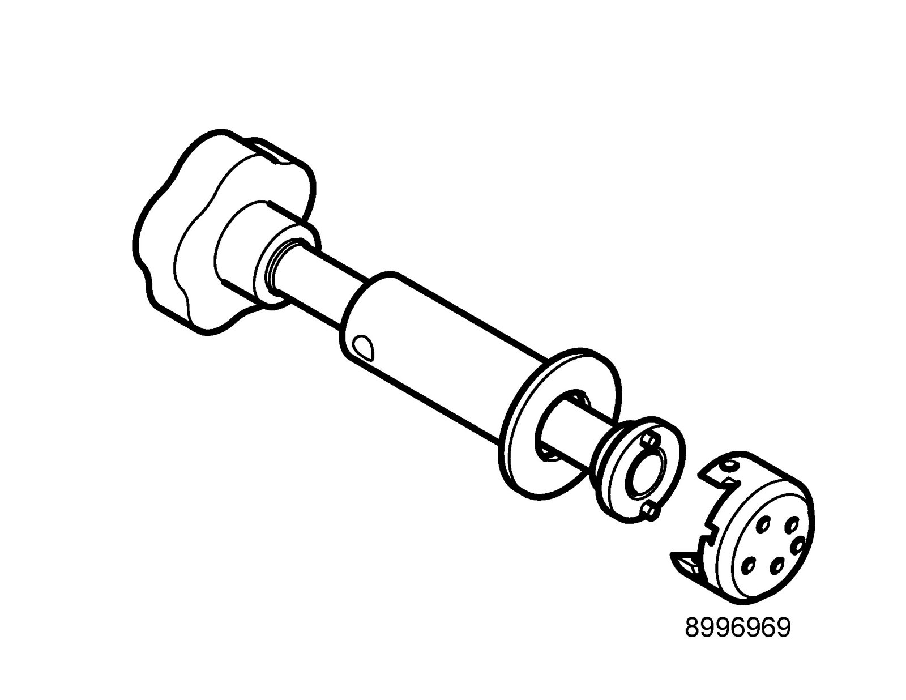
KM-6007
Used together with 89 96 977 Adapter, resetting tool, Handbrake.
86 12 814 Toolboard T2 Chassis-body
Group: Chassis
89 96 977 Adapter, resetting tool, Handbrake

KM-6007-20
Used together with 89 96 969 Resetting tool, Handbrake.
86 12 814 Toolboard T2 Chassis-body
Group: Chassis
89 96 985 Brake fluid tester
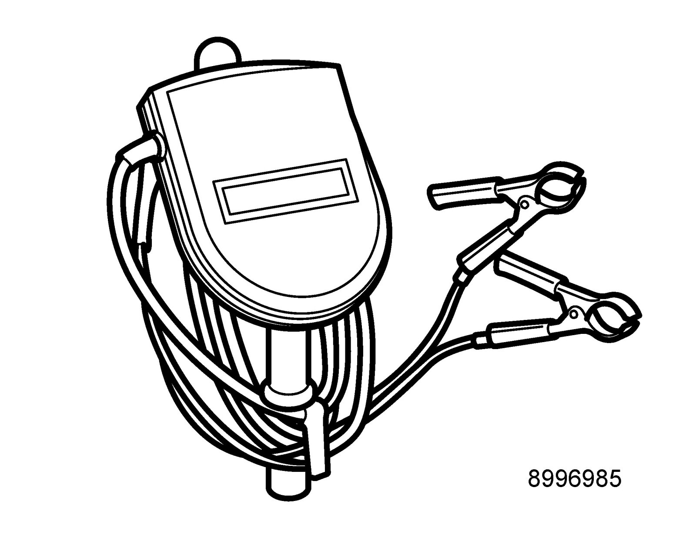
Facom DOT TEST, DF.16
Available - no subscription
Group: Brakes
Thread locking adhesive, Loctite 242
Specifications
Loctite 242. Anaerobic thread adhesive. Normal. 50 ml bottle.
Saab application
For example, manual transmissions and brake calipers.
Packaging
1 pc
Transport
No restrictions apply when transporting this product.
Directives
Repeated or prolonged contact with sensitive or scratched skin may cause allergic reactions. Use Loctite dosage equipment in order to avoid skin and eye contact.